Unidad 2: Arquitecturas para computación paralela#
Contenido de la unidad#
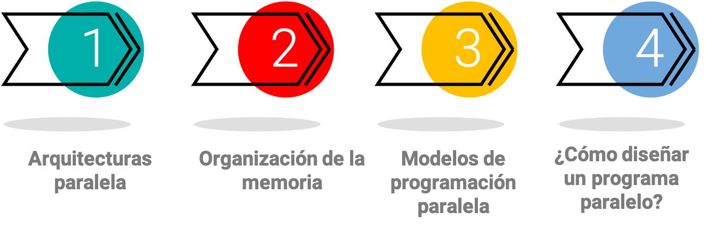Arquitectura de memoria en computación paralela#
Taxonomía de Flynn#
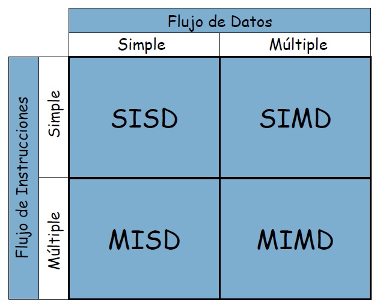SISD: El procesador ejecuta una única instrucción en una única pieza de datos en cada ciclo de reloj. - Ordenador.
MISD: Múltiples procesadores ejecutan diferentes instrucciones en el mismo conjunto de datos. Un ejemplo de un sistema MISD es un sistema de detección de fallas de seguridad en tiempo real, en el que varias instrucciones de verificación se ejecutan simultáneamente en la misma pieza de datos para detectar cualquier falla.
SIMD: En este caso, el procesador ejecuta la misma instrucción en varios datos diferentes en cada ciclo de reloj - GPU
MIMD: Múltiples procesadores ejecutan diferentes instrucciones en diferentes conjuntos de datos al mismo tiempo. clúster de servidores que ejecutan aplicaciones separadas en cada servidor, pero se comunican entre sí para realizar una tarea común.
SISD
En un ciclo del reloj:
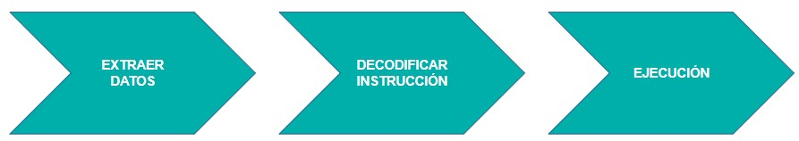 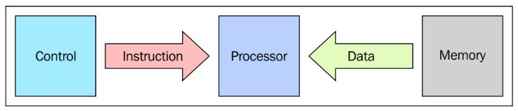Ejemplo
MISD
Poco práctico comercialmente
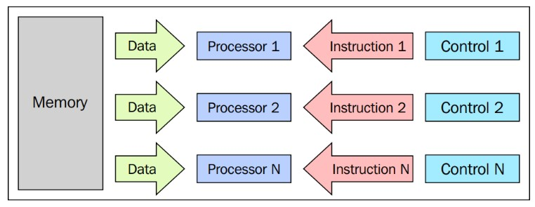
SIMD
En este se basa la arquitectura de la GPU
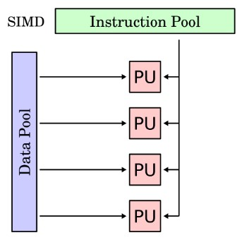Ejemplo
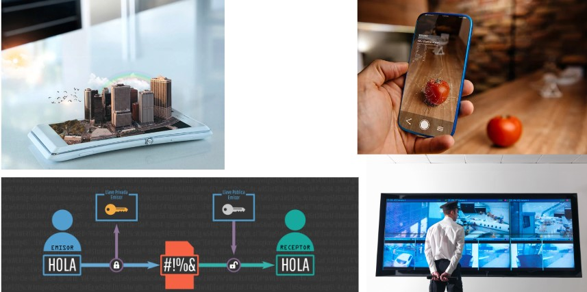El procesamiento de imágenes y video se utiliza en una variedad de aplicaciones, como la televisión digital, la realidad aumentada y la vigilancia de seguridad. Para procesar grandes cantidades de datos de imagen y video, se utilizan procesadores SIMD que pueden procesar múltiples datos simultáneamente.
MIMD
Arquitectura aplicada en supercomputadores.
Async algorithms
Ejemplo
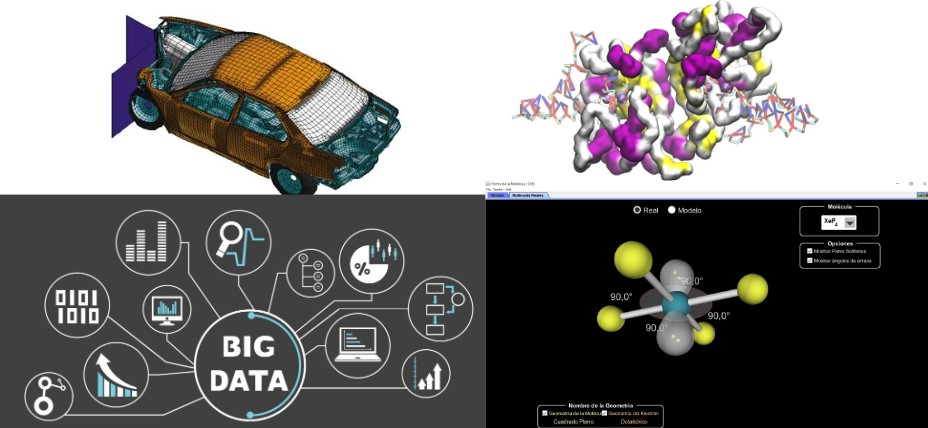Organización de la memoria#
En la arquitectura MIMD
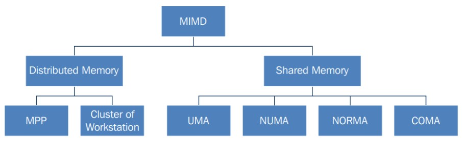UMA (Uniform Memory Access): En una arquitectura UMA, todos los procesadores tienen acceso uniforme y directo a la misma memoria física compartida. Esto significa que la latencia de acceso a la memoria es la misma para todos los procesadores. Sin embargo, a medida que aumenta el número de procesadores, el ancho de banda de la memoria puede convertirse en un cuello de botella, lo que limita el rendimiento del sistema.
NUMA (Non-Uniform Memory Access): En una arquitectura NUMA, los procesadores se organizan en grupos, y cada grupo tiene su propia memoria física compartida. Los procesadores pueden acceder a su propia memoria de forma más rápida que a la memoria de otros grupos, lo que significa que el acceso a la memoria no es uniforme. Esto puede mejorar el rendimiento del sistema en aplicaciones que tienen patrones de acceso a la memoria que se centran en una región específica de la memoria.
NORMA (No-Remote Memory Access): NORMA es una arquitectura de memoria que combina los aspectos de UMA y NUMA. En una arquitectura NORMA, cada procesador tiene acceso directo y uniforme a una región local de la memoria, pero también puede acceder a regiones remotas de la memoria a través de una red de interconexión de alta velocidad. Esto permite una mayor flexibilidad en el acceso a la memoria y puede mejorar el rendimiento en aplicaciones que tienen patrones de acceso a la memoria más complejos.
COMA (Cache Only Memory Architecture): En una arquitectura COMA, cada procesador tiene su propia memoria caché local, pero no hay memoria física compartida. Los procesadores se comunican entre sí a través de una red de interconexión de alta velocidad para compartir datos. Cuando un procesador necesita acceder a datos que no están en su caché local, los solicita a otros procesadores en la red. Los datos se almacenan en caché en los procesadores que los necesitan, lo que reduce la latencia de acceso a la memoria. Esto puede mejorar el rendimiento del sistema en aplicaciones que tienen patrones de acceso a la memoria que se centran en un subconjunto específico de los datos. Massively parallel processing: MPP machines are composed of hundreds of processors (which can be as large as hundreds of thousands in some machines) that are connected by a communication network. The fastest computers in the world are based on these architectures; some example systems of these architectures are: Earth Simulator, Blue Gene, ASCI White, ASCI Red, and ASCI Purple and Red Storm.
Memoria Compartida#
Misma memoria para todos los procesadores.
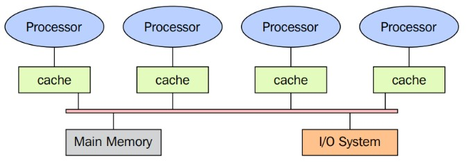La memoria es la misma para todos los procesadores.
Solo un procesador puede tener acceso a la memoria a la vez.
La ubicación de una memoria compartida no puede ser cambiada por otro proceso mientras una tarea lo accede.
Compartir los datos es rápido, el tiempo requerido para computar dos tareas es el mismo al tiempo de leer una sola ubicación de memoria.
Tipos de acceso a memoria en memoria compartida#
Acceso uniforme a la memoria (UMA) Arquitectura de computadora en la que todos los procesadores comparten un acceso igualitario a la memoria principal del sistema. Cada procesador puede acceder a cualquier ubicación en la memoria en el mismo tiempo y con la misma velocidad.
UMA
Acceso no-uniforme a la memoria (NUMA) Cada procesador tiene su propia memoria local, y el acceso a la memoria remota (es decir, la memoria de otros procesadores) puede ser más lento que el acceso a la memoria local. El acceso a la memoria no es uniforme y depende de la ubicación de la memoria en relación con el procesador que la está solicitando. proporciona una escalabilidad superior para sistemas de alto rendimiento.
NUMA
Sin acceso remoto a la memoria (NORMA) No es una arquitectura sino un concepto teórico. Cada procesador tendría su propia memoria local y no tendría acceso a la memoria de otros procesadores. No hay posibilidad de compartir memoria entre procesadores.
Acceso solo a la memoria caché (COMA) Cada procesador tiene su propia memoria caché, pero los datos compartidos se almacenan en un conjunto de caché común. el acceso a la memoria caché compartida puede ser más lento. Si un procesador necesita acceder a datos que se encuentran en la caché compartida de otro procesador, primero debe buscarlos en la caché compartida y luego copiarlos en su propia caché local para su procesamiento.
Memoria Distribuida: Sistemas Multicomputadores#
Small complete systems
Small complete systems
Protocolo de paso de mensajes
Protocolo de paso de mensajes
La memoria es físicamente distribuida entre los procesadores, cada memoria local es directamente accesible solo por su procesador.
Se logra la sincronización moviendo la data.
Subdividir los datos en la memoria local afecta el rendimiento, se debe hacer cuidadosamente.
Se usa el protocolo para que cada cpu pueda comunicarse con otra a través del intercambio de paquetes.
Procesamiento masivo paralelo
Muchos procesadores, conectados por una red de comunicación.
Procesamiento masivo paralelo
La arquitectura heterogénea
CUDA y OpenCL
La arquitectura heterogénea
Modelos de programación paralela#
Existen como una abstracción de las arquitecturas de hardware
No existe un modelo mejor que otro, depende del problema
Paradigma del modelo de paso de mensajes#
El modelo MPI está diseñado con memoria distribuida, pero al ser modelos de programación paralela, también puede utilizarse en una máquina de memoria compartida.
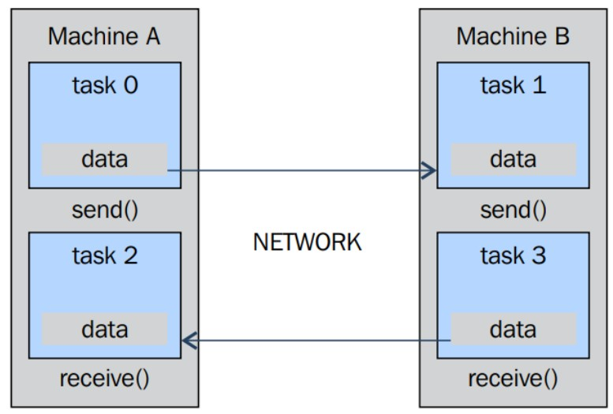La grafica muestra que la comunicación entre máquinas puede ser de un procesador a otro desde una tarea a la otra y que cada máquina tiene la capacidad tanto de enviar como de recibir datos mediante el protocolo de pasos mensajes que se comunican a través de la red.
Modelo de datos paralelos#
Las GPU de la generación actual operan con alta eficiencia con los datos alineados
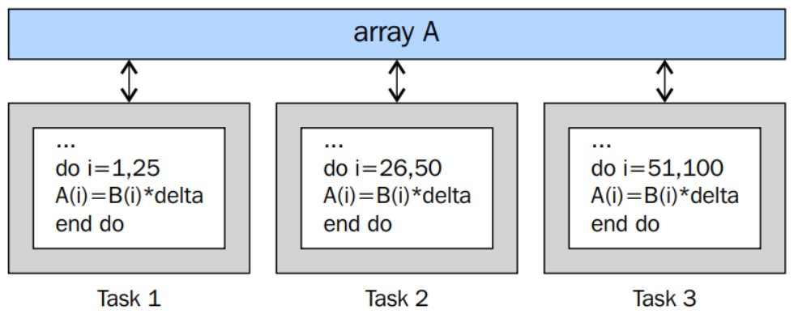¿Cómo diseñar un programa paralelo ?#
Cuando se diseña un algoritmo es necesario tener en cuenta:
Los tiempos de las comunicaciones
Maximizar el procesamiento en cada nodo o unidad de procesamiento.
Los costes de implementar el algoritmo
Tiempos de planificación
Metodología foster para diseño#
Consiste en cuatro etapas:
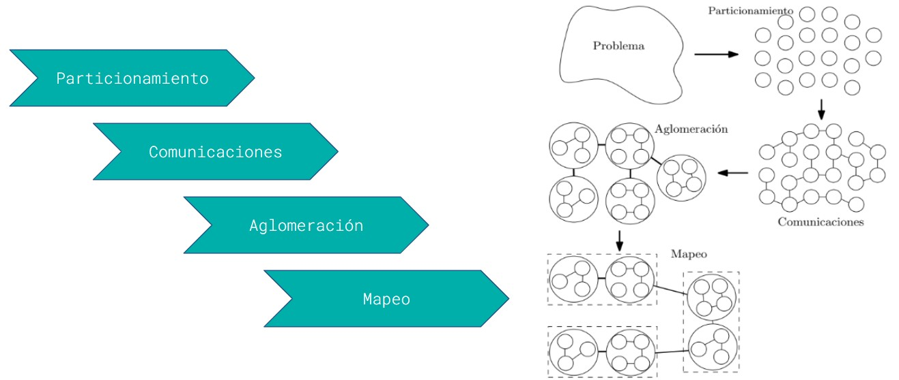Particionamiento: En el dominio de los datos o de funciones.
Comunicaciones: Se hace por medio de distintos paradigmas tales como la memoria o paso de mensajes
Aglomeración: Las tareas o datos son agrupados teniendo en cuenta posibles dependencias
Mapeo: Los grupos son asignados a una unidad de procesamiento.